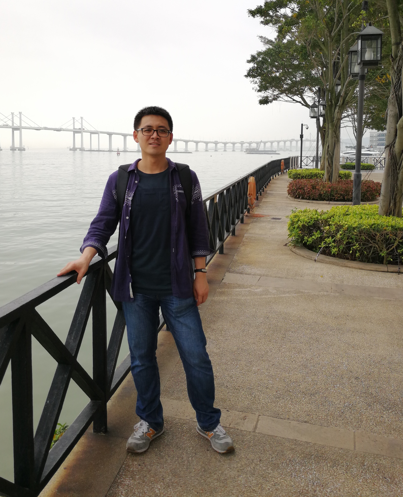

Personal Information

He is a principal researcher and team leader at WeChat, Tencent Inc, China.
He got his Ph.D. degree at Institute of Computing Technology, Chinese Academy of Sciences.
His research interests include machine translation, natural language processing and large language modeling.
E-mail: fandongmeng [at] tencent [dot] com
News
Publications
Please go to [Full List] or [Google Scholar] to see all my publications.
Recent Preprints
- Hui Zhang, Juntao Liu, Zongkai Liu, Liqiang Niu, Fandong Meng, Zuxuan Wu and Yu-Gang Jiang. WeEdit: A Dataset, Benchmark and Glyph-Guided Framework for Text-centric Image Editing. [arxiv]
- Chenze Shao, Darren Li, Fandong Meng and Jie Zhou. Continuous Autoregressive Language Models. [arxiv]
- Jiaan Wang, Fandong Meng and Jie Zhou. ExTrans: Multilingual Deep Reasoning Translation via Exemplar-Enhanced Reinforcement Learning. [arxiv]
- Xue Zhang, Songming Zhang, Yunlong Liang, Fandong Meng, Yufeng Chen, Jinan Xu and Jie Zhou. A Dual-Space Framework for General Knowledge Distillation of Large Language Models. [arxiv]
- Meiqi Chen, Fandong Meng, Yingxue Zhang, Yan Zhang and Jie Zhou. CRAT: A Multi-Agent Framework for Causality-Enhanced Reflective and Retrieval-Augmented Translation with Large Language Models. [arxiv]
- Xiangyu Hong, Che Jiang, Biqing Qi, Fandong Meng, Mo Yu, Bowen Zhou and Jie Zhou. On the token distance modeling ability of higher RoPE attention dimension. [arxiv]
- Chao Hu, Yitian Chai, Hao Zhou, Fandong Meng, Jie Zhou and Xiaodong Gu. How Effectively Do Code Language Models Understand Poor-Readability Code?. [paper]
- Wenchao Chen, Liqiang Niu, Ziyao Lu, Fandong Meng and Jie Zhou. MaskMamba: A Hybrid Mamba-Transformer Model for Masked Image Generation. [arxiv]
Recent Publications
- Meiqi Chen, Fandong Meng and Jie Zhou. Figure It Out: Improve the Frontier of Reasoning with Executable Visual States. In Proceedings of ACL 2026.
- Xue Zhang, Yunlong Liang, Fandong Meng, Songming Zhang, Kaiyu Huang, Yufeng Chen, Jinan Xu and Jie Zhou. Think Natively: Unlocking Multilingual Reasoning with Consistency-Enhanced Reinforcement Learning. In Proceedings of ACL 2026.
- Zhiyu Xu, Lean Wang, Yuanxin Liu, Lei Li, Hao Zhou, Fandong Meng, Jie Zhou and Xu Sun. Investigating Cross-Modal Skill Injection: Scenarios, Methods, and Hyperparameters. In Proceedings of ACL 2026.
- Yuxiang Huang, Mingye Li, Xu Han, Chaojun Xiao, Weilin Zhao, Ao Sun, Ziqi Yuan, Hao Zhou, Fandong Meng and Zhiyuan Liu. Spava: Accelerating Long-Video Understanding via Sequence-Parallelism-aware Approximate Attention. In Proceedings of ACL 2026.
- Yijie Chen, Yijin Liu and Fandong Meng. SED-SFT: Selectively Encouraging Diversity in Supervised Fine-Tuning. In Proceedings of ACL 2026 (short).
- Xinyan Guan, Jiali Zeng, Chunlei Xin, Yaojie Lu, Hongyu Lin, Xianpei Han, Le Sun and Fandong Meng. Knowing When to Quit: Diagnosing and Training LLMs to Abort Futile Reasoning. In Findings of ACL 2026.
- Fangxu Yu, Ziyao Lu, Liqiang Niu, Fandong Meng and Jie Zhou. ArrowGEV: Grounding Events in Video via Learning the Arrow of Time. In Findings of ACL 2026.
- Zhuohao Yu, Jiali Zeng, Weizheng Gu, Mengyuan Sun, Yidong Wang, Fandong Meng, Jie Zhou, Shikun Zhang and Wei Ye. Joint Optimization of Training Data and Policy in RLHF. In Findings of ACL 2026.
- Xuanfan Ni, Liyan Xu, Chenyang Lyu, Longyue Wang, Mo Yu, Lemao Liu, Fandong Meng, Jie Zhou and Piji Li. Towards Threshold-Free KV Cache Pruning. In Findings of ACL 2026.
- Xinyan Guan, Jiali Zeng, Fandong Meng, Chunlei Xin, Yaojie Lu, Hongyu Lin, Xianpei Han, Le Sun and Jie Zhou. DeepRAG: Thinking to Retrieve Step by Step for Large Language Models. In Proceedings of ICLR 2026. [arxiv]
- Zhibin Lan, Liqiang Niu, Fandong Meng, Jie Zhou and Jinsong Su. UME-R1: Exploring Reasoning-Driven Generative Multimodal Embeddings. In Proceedings of ICLR 2026. [arxiv]
- Jiaan Wang, Fandong Meng and Jie Zhou. DeepTrans: Deep Reasoning Translation via Reinforcement Learning. In TACL. [arxiv]
Professional Services
- Action Editor: ACL Rolling Review (2024-)
- Standing Reviewer: TACL (2021-)
- Meta-Reviewer: ICLR 2026 (Area Chair); NeurIPS 2024 (Area Chair); AAAI 2022 (Senior PC Member)
- PC Member & Reviewer: NeurIPS (2023); ACL (2014, 2017-2022); EMNLP (2018, 2020-2022); NAACL (2016, 2018, 2021); AAAI (2020, 2021); IJCAI (2019); COLING (2018)
Honours
- Best Long Paper Awards of ACL 2019 and EMNLP 2023.
- Champion of ICDAR 2023 Competition on Robust Layout Segmentation in Corporate Documents.
- Champion of WMT22 Chat Translation Task on English->German and German->English.
- Champion of WMT22 Biomedical Translation Task on Chinese->English.
- Champion of WMT21 news translation task on English->Chinese, English->Japanese, Japanese->English, and English->German (among constrained systems).
- Champion of WMT20 news translation task on Chinese->English.
- National Scholarship for Graduate Excellence of UCAS in 2015.
- UCAS Outstanding Student Awards in 2013 and 2014.
- Outstanding Winner (world 1/14) of COMAP's Mathematical Contest in Modeling (MCM/ICM) in 2010.
- First Prize Winner of National Mathematic Contest In Modeling in 2009.